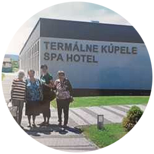
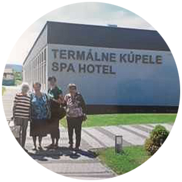

Používané metódy a techniky
Aktivity programu individuálnej sociálnej rehabilitácie
Prvky kognitívnej terapie (tréning pamäte, pamäťové cvičenia a úlohy, testy, tajničky, krížovky,osem-smerovky)


Prvky biblioterapie (čítanie kníh, časopisov, textov a príbehov, predčítavanie)


Rozvoj pracovných zručností (kreatívna tvorba, vlastná tvorba, ručné práce, pracovná terapia s rôznym materiálom)


Sociálna komunikácia (sociálne poradenstvo, rozhovory na témy, ktoré klienta zaujímajú, sociálna práca s jednotlivcom)
Individuálne sprevádzanie klienta (pomoc, podpora, asistencia, objasňovanie, informovanie)
Individuálny plán klienta (sociálne poradenstvo, sociálna prevencia, sociálne plánovanie)
Duchovné poradenstvo (integrácia spirituálnych aspektov, modlitba, spoveď)

Starostlivosť o obytnú miestnosť(udržiavanie poriadku, estetizácia)
Prvky modernej a inovatívnej techniky (obsluha elektroniky, PC, mobilný telefón, práca s tabletom, online komunikácia, videohovory)
Prvky reminiscencie v práci so seniormi (spomienková terapia, fotografie, podnetné predmety a materiály)


Prvky záhradnej terapie (starostlivosť o bytové a balkónové kvety)


Individuálna fyzioterapia, cvičenie a pohybové aktivity
Prvky animoterapie (starostlivosť o zviera)


Relaxačné metódy(relaxácia, techniky dychových cvičení, techniky riadenej meditácie, psychogymnastika, koncentračno-pohybové aktivity, prvky aromaterapie)
Metódy zmyslovej stimulácie (počúvanie ľudových rozprávok, príbehov, hovoreného slova, zmyslová stimulácia, zvukové pexeso, stimulácia chutí a vôní, hmatové a zrakové stimuly)
Validácia s jednotlivcom podľa Naomi Feil (vcítenie a priblíženie sa vnútornému prežívaniu dezorientovaného človeka)
Prvky arteterapie (výtvarné aktivity, vymaľovávanie, vyfarbovanie, kreslenie, mandaly)
Aktivity Programu skupinovej sociálnej rehabilitácie
Prvky kognitívnej terapie (tréning pamäte, pamäťové cvičenia a úlohy, testy, tajničky, krížovky, osem-smerovky)


Prvky biblioterapie (skupinové čítanie kníh, časopisov, textov a príbehov, rozhovory)
Rozvoj pracovných zručností (kreatívna tvorba, vlastná tvorba, ručné práce, pracovná terapia s rôznym materiálom)


Prvky muzikoterapie (stretnutie pri hudbe a filme, hudobno-pohybové aktivity, spievanie)


Duchovné poradenstvo (skupinové modlitby, stretnutia pri modlitbe, účasť na sv. omši)

Hranie spoločenských hier (spoločenské a kartové hry)
Prvky záhradnej terapie (starostlivosť o záhradku, spoločné sadenie a pestovanie rastlín)
Prvky klimatoterapie (skupinové vychádzky po blízkom okolí sa realizujú v prípade priaznivého počasia)


Relaxačné metódy (relaxácia, techniky dychových cvičení, techniky riadenej meditácie, psychogymnastika, koncentračno-pohybové aktivity, prvky aromaterapie)
Metódy zmyslovej stimulácie (stimulácia zmyslov - počúvanie ľudových rozprávok, príbehov, hovoreného slova, zvukové pexeso, stimulácia chutí a vôní, hmatové a zrakové stimuly)
Kultúrny program v priestoroch zariadenia a mimo zariadenia


Skupinová fyzioterapia, cvičenie a pohybové aktivity (v telocvični zariadenia)
Práca s interaktívnou tabuľou (internet, logické hry a kognitívne cvičenia, súťaže, hádanky a doplňovačky, premietanie filmov, odborné prednášky, prezentácie)

Validácia v skupine podľa Naomi Feil (myšlienkou tejto odbornej metódy je získať dôveru, dôvera vytvorí istotu, istota vytvorí silu, sila obnoví sebavedomie a zníži stres v skupine)
Prvky kulinoterapie v skupine (obľúbená príprava jedla, varenie, pečenie)


Výlety
 
